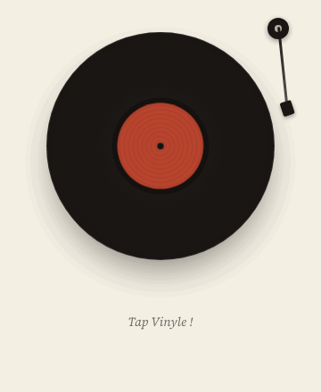
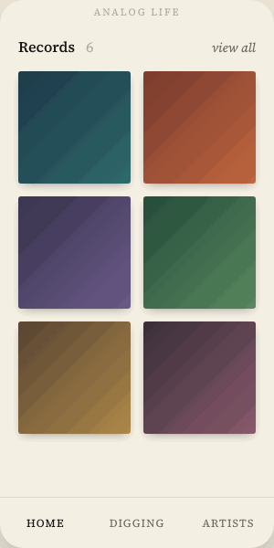

今年のベルリン映画祭で、 Scott LaFaro 亡きあとの Bill Evans を描いた 映画『Everybody Digs Bill Evans』がプレミア。 ジャズがいまも更新されていく季節に、 Analog Life から、新しい機能をひとつ。
The world, on your shelf.

気になった曲を音声のまま検索。 曲が見つかったら、ワンタップで 欲しいアルバムに登録。
Where to find it ?

Home → Digging → Listen
Analog Life